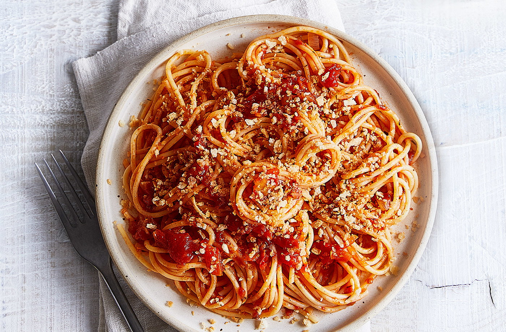
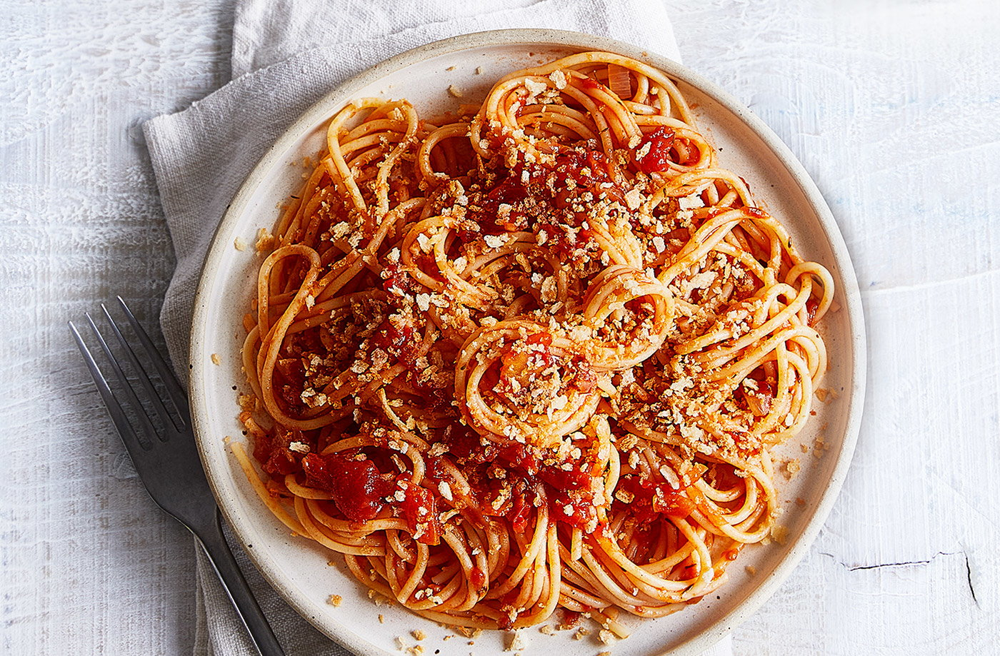
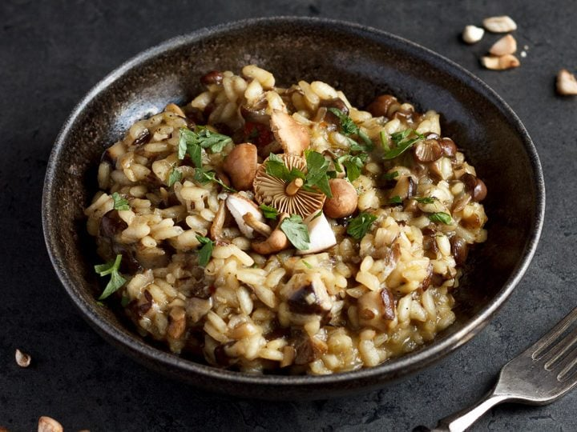
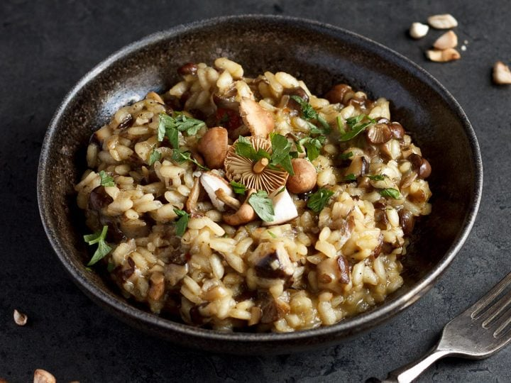

Italian Food Recipes
I am going to share two popular Italian dishes below. They are Spaghetti Bolognese and mushroom risotto.
Recipe for Spaghetti Bolognese
Spaghetti Bolognese is a famous pasta around the world. It is a spaghetti tossed with sauce which made of tomatoes sauce, ground beef, garlic, herbs and garlic.
 

Cooking Instructions
- Cook the onion and garlic in the pan until they become soft. Then, add ground beef and cook with medium heat until aromatic.
- Add red wine to the pan and turn with samll heat to simmer it until the alcohol smell is gone.
- Add other ingredients to the pan and cook them in medium heat until boiling. Then, simmer with low heat for 20 - 30 minutes.
- Season it with salt and pepper.
| Ingredient | Quantity |
|---|---|
| olive oil | 2 tablespoons |
| minced garlic | 2 pieces |
| onion | 1 piece |
| ground beef | 500 grams |
| red wine | 8 tablespoons |
| beef bouillon cube | 2 pieces |
| tomato | 800 grams |
| tomato paste | 2 tablespoons |
| sugar | 2 tablespoons |
| bay leave | 2 pieces |
| fresh thyme | 2 pieces |
| Parmesan cheese | 300 grams |
| spaghetti | 400 grams |
| pepper | 1 tablespoon |
| salt | 1 tablespoon |
Recipe for Mushroom Risotto
Risotto is usually a main dish in Italy and is making by simmering rice with broth. You can add other ingredients to make your own risotto. This time, i introduce a mushroom risotto for you.
 

Cooking Instructions
- Heaat the chicken broth in the pan with low heat until boiling and set aside.
- Cook sliced portobello mushrooms and white mushrooms with oil until soft. Then, add rice and stir it wilth oil until the color become golden.
- Add white wine and stir it until the wine is absorbed by the rice. Then, add chicken broth and stir it until the broth is absorbed.
- Add green onion, butter, chives and Parmesan cheese to the rice and season it with salt and pepper.
| Ingredient | Quantity |
|---|---|
| chicken broth | 6 cups |
| olive oil | 3 tablespoons |
| sliced portobello mushrooms | 1 pound |
| sliced white mushrooms | 1 pound |
| green onion | 2 pieces |
| white wine | 0.5 cup |
| butter | 4 tablespoons |
| chive | 3 tablespoons |
| Parmesan cheese | 5 tablespoons |
| black pepper | 1 tablespoon |
| salt | 1 tablespoon |
| rice | 2 cups |